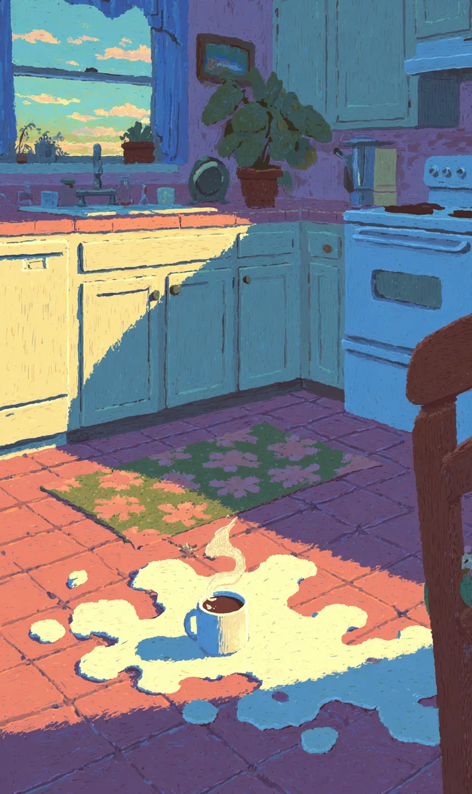

챙그랑! 하얀 컵이 바닥에서 조각났다. 갈색 커피가 하얀 타일 위로 검은 지도처럼 퍼졌다. 나는 가만히 서 있었다. 화끈한 김이 발등 위로 올라왔다. 진한 커피 향기가 부엌을 가득 채웠다. 나는 화내지 않았다. 이상하게도 마음이 아주 고요했다. 바닥 위의 커피는 작은 우주 같았다. 아침 햇살이 창문으로 들어와 갈색 물 위에서 금색으로 반짝였다.
[Clink! The white cup shattered on the floor. Brown coffee spread across the white tiles like a dark map. I stood still. Hot steam rose over my feet. A rich coffee scent filled the kitchen. I was not angry. Strangely, my heart was very still. The coffee on the floor was like a small universe. Morning sunlight came through the window and sparkled gold on the brown water.]
나는 낡은 수건을 가져왔다. 무릎을 꿇고 천천히 바닥을 닦았다. 수건이 따뜻한 갈색으로 변했다. 손가락 끝으로 커피의 온기가 전해졌다. 나는 천천히 생각했다. 오늘은 토요일이다. 시간은 아주 많다. 커피는 다시 만들면 된다. 물을 끓이고, 원두를 갈고, 한 방울씩 내리면 된다. 서두를 필요는 전혀 없었다. 이 아침은 오직 나의 것이었다.
[I brought an old towel. I knelt down and slowly wiped the floor. The towel turned a warm brown. The warmth of the coffee reached my fingertips. I thought slowly. Today is Saturday. There is plenty of time. I can just make coffee again. I only need to boil water, grind the beans, and brew it drop by drop. There was no need to hurry at all. This morning belonged only to me.]
주전자에 새 물을 채웠다. 가스레인지의 파란 불꽃이 작게 피어났다. 물이 뜨거워지는 소리가 들렸다. 슈우우, 작은 휘파람 소리가 점점 커졌다. 나는 그 소리가 좋았다. 원두 봉투를 열자 깊고 어두운 흙 냄새가 났다. 원두를 그라인더에 넣고 돌렸다. 드르륵, 거친 소리가 조용한 부엌에 울렸다. 기분 좋은 소음이었다.
[I filled the kettle with fresh water. The blue flame of the stove bloomed small. I heard the sound of the water getting hot. *Shoooo*, a small whistling sound grew louder. I liked that sound. When I opened the bean bag, a deep, dark earthy smell came out. I put the beans in the grinder and turned it. *Grrrr*, the rough sound echoed in the quiet kitchen. It was a pleasant noise.]
커피가 내려지는 것을 기다렸다. 검은 보석 같은 물이 한 방울, 한 방울 떨어졌다. 컵이 천천히 찼다. 나는 나무 의자에 앉아 창밖을 보았다. 바람이 불어 나뭇잎이 은빛으로 흔들렸다. 작은 새 한 마리가 가지 위에 앉아 노래했다. 마침내 커피가 다 내려졌다. 나는 두 손으로 따뜻한 컵을 감쌌다. 첫 모금을 마셨다. 쓰고, 뜨겁고, 완벽했다. 나는 작게 미소 지었다. 쏟아진 커피는 이제 중요하지 않았다. 중요한 것은 지금 이 순간, 내 손안의 온기뿐이었다.
[I waited for the coffee to brew. Water like black jewels fell drop by drop. The cup slowly filled. I sat on a wooden chair and looked out the window. The wind blew and the leaves shimmered silver. A small bird sat on a branch and sang. Finally, the coffee finished brewing. I wrapped both hands around the warm cup. I took the first sip. It was bitter, hot, and perfect. I smiled a little. The spilled coffee didn’t matter now. What mattered was this moment, and the warmth in my hands.]